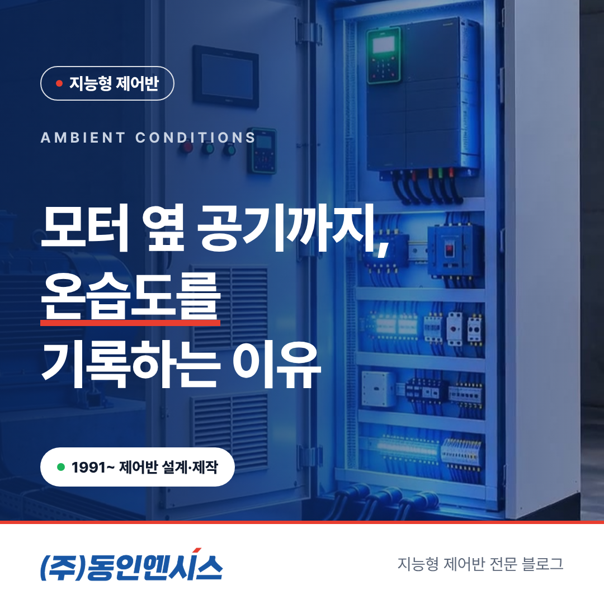
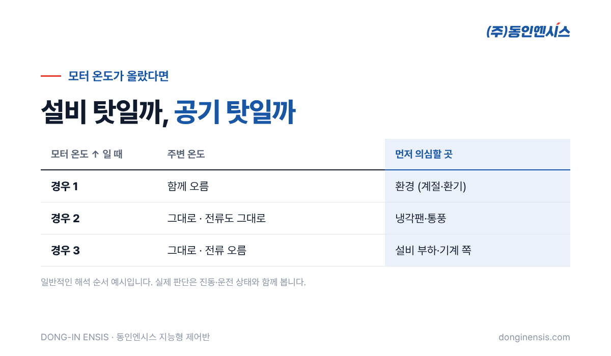
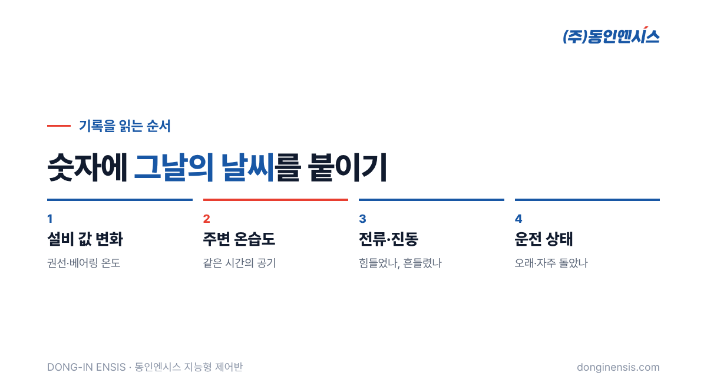

모터 온도가 지난달보다 높게 나온다면, 그 모터에 문제가 생긴 걸까요? 반드시 그렇지는 않습니다. 설비실 자체가 더워졌을 수도 있기 때문입니다. 설비 데이터를 볼 때 의외로 자주 놓치는 것이 바로 설비 주변의 공기입니다. 1991년부터 부산에서 공장과 선박의 제어반을 설계·제작해 온 동인엔시스는 지능형 제어반으로 모터 온도와 진동, 전류뿐 아니라 설비 주변의 대기 온습도까지 함께 기록합니다. 이 글에서는 설비 온습도 기록이 왜 필요한지, 그리고 그 기록을 어떻게 읽으면 좋은지 풀어 보겠습니다.
모터는 돌면서 끊임없이 열을 냅니다. 그 열은 모터 표면과 냉각팬을 통해 주변 공기로 빠져나갑니다. 그래서 모터 온도는 '모터가 얼마나 일하는가'와 '주변 공기가 얼마나 열을 받아 주는가'가 함께 정합니다.
주변 공기가 시원하면 같은 일을 해도 모터 온도가 낮게 유지되고, 주변이 더우면 같은 일을 해도 온도가 높아집니다. 여름철 지붕 아래 설비실, 환기가 잘 안 되는 지하 펌프실, 열을 내는 설비가 여러 대 모여 있는 압축기실처럼 주변 온도가 크게 오르내리는 곳일수록 이 차이가 커집니다.
그래서 모터 온도 숫자만 보고 판단하면 오해가 생기기 쉽습니다. 사람 체온을 잴 때 방금 뛰고 왔는지, 더운 방에 있었는지를 함께 묻는 것과 같은 이치입니다. 계절이 바뀌었을 뿐인데 설비 이상으로 보이거나, 반대로 진짜 이상이 '여름이라 그렇겠지' 하는 생각에 묻히기도 합니다.

가장 큰 쓰임은 원인을 가르는 일입니다. 모터 온도가 올랐을 때 주변 온도도 같이 올랐다면 환경의 영향이 큰 것이고, 주변 온도는 그대로인데 모터 온도만 올랐다면 설비 쪽을 먼저 의심할 수 있습니다.
여기에 전류와 진동을 함께 보면 판단이 더 분명해집니다. 주변 온도는 그대로이고 전류도 그대로인데 모터 온도만 오른다면, 냉각팬이나 통풍 쪽 문제일 수 있습니다. 전류가 함께 올랐다면 설비가 더 힘들게 일하고 있다는 신호일 수 있습니다.
작년 여름과 올해 여름을 비교하려면 주변 조건이 비슷했는지부터 알아야 합니다. 주변 온습도가 함께 기록되어 있으면 '비슷한 날씨였던 날'끼리 골라 설비 상태를 비교할 수 있습니다. 같은 조건에서 올해 모터 온도가 더 높다면 그때는 설비의 변화로 볼 근거가 생깁니다. 막연한 느낌이 아니라 조건을 맞춘 비교라서 정비 계획을 세울 때도 설득력이 커집니다.
습도는 온도와는 다른 종류의 문제를 알려 줍니다. 습한 날이 이어지거나 낮과 밤의 온도 차가 큰 시기에는 차가운 표면에 물방울이 맺히기 쉽고, 이런 습기는 단자와 접점, 절연 상태에 부담을 줍니다. 설비 주변의 습도가 어떤 시기에 높아지는지 기록으로 알고 있으면, 점검이나 환기 계획을 그 시기에 맞춰 세울 수 있습니다. 장마철이나 환절기처럼 해마다 반복되는 패턴은 한 해만 기록해 두어도 다음 해 대비에 바로 쓸 수 있습니다.
Photorealistic photo of a basement pump room in a Korean factory on a hot humid day: blue pumps and motors, slight condensation on cold water pipes, a wall ventilation fan, a light-grey control cabinet with a small touchscreen, warm hazy light, no people, no brand logos, no readable text. 3:2 landscape.
설비 온습도 기록은 그것만 따로 보기보다 다른 값과 나란히 볼 때 힘을 발휘합니다. 아래 순서로 보는 습관을 들이면 좋습니다.
이 네 가지를 겹쳐 보면 대부분의 온도 변화는 설명이 됩니다. 설명되지 않고 남는 변화가 바로 들여다봐야 할 대상입니다. 동인엔시스가 고객사 담당자 교육에서 화면 보는 법을 설명할 때도 이 순서를 함께 연습합니다. 숫자 하나를 보고 놀라기 전에, 그 숫자 옆의 배경부터 확인하는 습관이 헛걸음을 크게 줄여 줍니다.
지능형 제어반은 센서마다 기준값을 두고 정상·경고·알람을 판정합니다. 처음 기준을 잡는 설치 직후의 몇 주 동안 주변 온습도 기록이 함께 있으면 '여름의 평소'와 '겨울의 평소'를 구분해 볼 수 있습니다.
주변 온도가 크게 바뀌는 현장이라면 계절이 바뀔 때 기준값을 한 번씩 다시 살펴보는 것이 좋습니다. 여름에 맞춰 잡은 기준은 겨울에 너무 느슨할 수 있고, 겨울에 맞춰 잡은 기준은 여름에 경고를 쏟아낼 수 있기 때문입니다. 계절이 바뀌는 시점의 기준 손질은 유지관리 일정에 넣어 함께 챙깁니다.

온습도계는 어디서나 쉽게 살 수 있는 장비입니다. 그런데도 동인엔시스가 지능형 제어반의 수집 항목에 대기 온습도를 넣은 데에는 이유가 있습니다. 따로 단 온습도계는 숫자를 보여 주기는 하지만, 그 숫자가 같은 시각의 모터 온도나 전류와 한 줄로 이어지지 않습니다. 사람이 두 기록을 나란히 맞춰 보려면 시간도 들고, 시각이 조금만 어긋나도 해석이 틀어집니다.
제어반이 설비 값과 주변 온습도를 같은 시각에 함께 남기면, 화면에서 두 흐름을 겹쳐 보는 일이 한 번에 끝납니다. 배 위처럼 습기와 온도 변화가 심한 현장에서 제어반을 만들어 온 경험이, 설비 옆 공기까지 함께 기록하는 설계로 이어진 셈입니다.
이런 곳에서는 설비 온습도 기록이 설비 상태를 읽는 '배경 정보'가 되어, 같은 숫자를 훨씬 정확하게 해석하게 해 줍니다. 반대로 냉난방이 잘 되는 실내 설비라면 우선순위를 조금 낮춰도 됩니다.
Photorealistic close-up photo of a small white temperature and humidity sensor mounted on the side of a light-grey industrial control cabinet in a factory machine room, cable gland and neat wiring visible, motor softly blurred in the background, soft even light, generic unbranded device, no brand logos, no readable text. 3:2 landscape.
Q. 온습도를 재려면 따로 장비를 달아야 하나요? 지능형 제어반으로 교체하거나 새로 설치하면 대기 온습도가 수집 항목에 포함되어, 다른 설비 값과 같은 시각으로 기록됩니다.
Q. 설비 온습도 기록만으로 이상을 알 수 있나요? 주변 온습도는 원인을 가르는 배경 정보입니다. 모터 온도, 전류, 진동, 운전 상태와 함께 볼 때 의미가 커집니다.
Q. 기록은 얼마나 보관되나요? 보관 기간은 프로젝트별 계약으로 정합니다. 계절 비교를 하려면 1년 이상의 기록이 있으면 좋습니다.
설비 온습도 기록은 설비 데이터에 '그날의 날씨'를 붙여 주는 일입니다. 같은 온도라도 그날이 더웠는지, 습했는지를 알면 판단이 달라집니다. 모터 옆 공기까지 함께 남겨 두면, 계절에 속지 않고 설비의 진짜 변화를 볼 수 있습니다.
문의 051-862-3668 · dongin@donginmne.com
아래 질문 중 하나에 실제 경험으로 답해 본문 적당한 곳에 넣어 주세요. 사람이 직접 쓴 문장이 들어가면 네이버에서 저품질 위험이 줄고 노출에 도움이 됩니다.